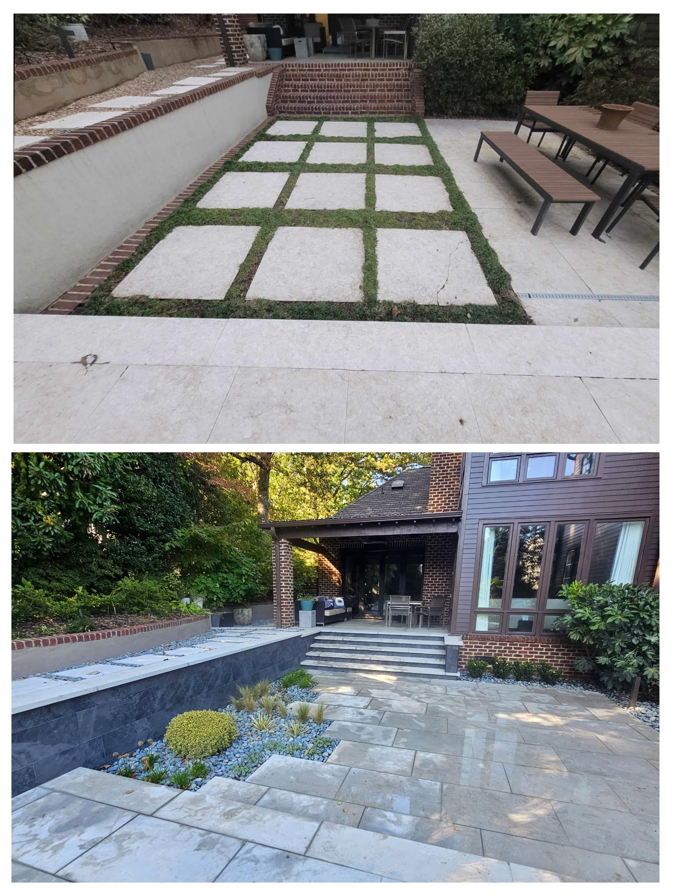

Plant Man builds stone patios, walkways, borders, repairs, and outdoor feature areas for homeowners in Charlotte, Matthews, Huntersville, Concord, and nearby communities.

Replace this paragraph with exact wording about materials, project size, drainage, demolition, grading, and cleanup.